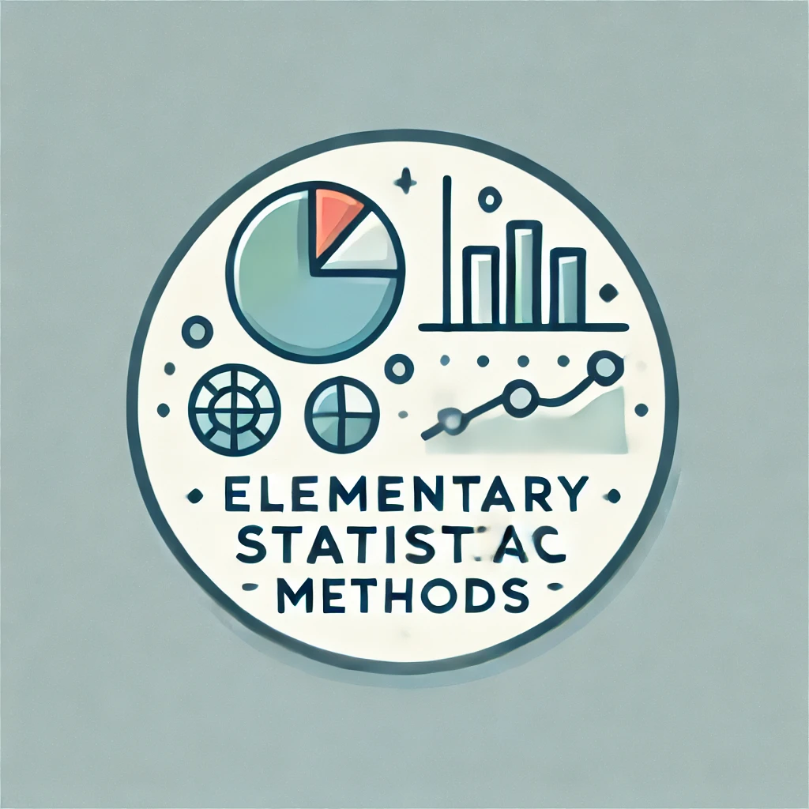
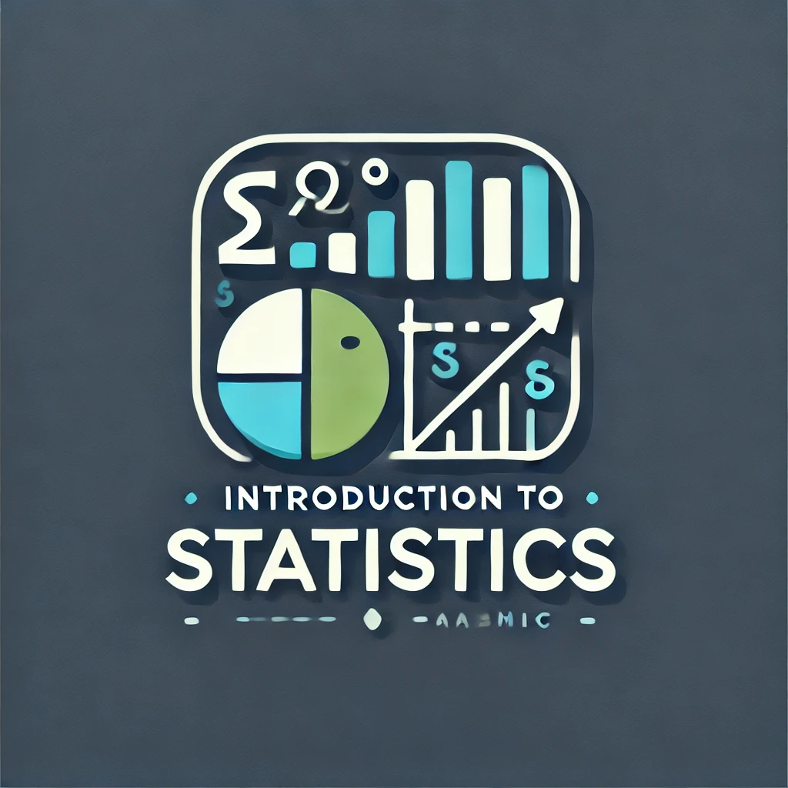
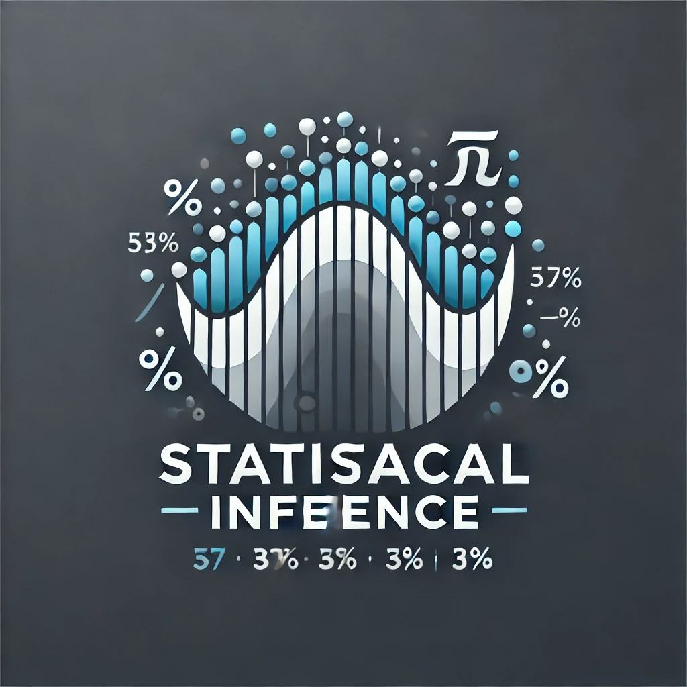

Teaching
I teach introduction to statistics, statistical inference, statistical computing, linear models classes.
Capstone Projects
Undergraduate:
- Xianglong Zhang: Logistic Regression in the Application of Diabetes Prediction (Fall 2017).
- Shruthi Garugu: Role of Gender and Age in the Severity of Schizophrenia (Fall 2017).
- Jimin Li: Logistic regression with applications to the analysis of Alzheimer’s disease (Fall 2019).
- Grant Weaver: Longitudinal studies of positive psychology interventions (Spring 2020).
- Caleb Nye: Estimating Heterogeneous Treatment Effects on Academic Performance (Spring 2021).
- Spencer Miceli: Interpreting Pediatric Sleep Studies using Functional Data Analysis (Spring 2022).
- Xavier Miller: Spatial Transcriptomics Data Anlysis (Spring 2025).
Graudate:
- Isaac Manring: BSTPP: Bayesian Spatiotemporal Point Process (Fall 2023).
Elementary Statistical Methods

Introduction to statistical methods with applications to diverse fields. Emphasis on understanding and interpreting statistical techniques. Data analysis for one and several variables, sampling and experimental design, basic probability, confidence intervals, significance tests of means and proportions, correlation and regression. Software is used throughout.
Introduction to Statistics

We live in a world where data are popping up everywhere, in ever richer forms and larger quantities, and are increasingly expected to form the basis for decisions in various fields. STAT 35000 is a data-oriented introduction to the fundamental concepts and methods of applied statistics. It is intended primarily to acquaint students with essential ideas and skills of statistical analysis for data in simple settings. In particular, the course will cover methods of constructing effective graphical and numerical displays to understand the data (exploratory data analysis), probability rules and conditioning arguments (Bayesian reasoning), and the key ideas in confidence interval and hypotheses testing (statistical inference). We use R as software for statistical data analysis.
Statistical Computing
In our data-driven world, data is becoming increasingly ubiquitous, taking on richer forms and larger quantities. These data are now playing a crucial role in decision-making across various fields. STAT I521 is designed to showcase how computing can be utilized to understand the performance of core statistical methods and introduce modern statistical techniques that require computational applications.
The course primarily focuses on providing a solid foundation for two statistical programming languages: SAS and R.
The SAS Statistical Software section provides an introduction to the SAS interface and syntax. Students will learn how to read data, manipulate it using various SAS statements and options, perform descriptive analyses using procedures such as proc means, proc univariate, and proc freq. They will also learn how to create charts using proc chart and proc gplot. Additionally, the course covers conditional statements, loops, arrays, macros, and advanced procedures such as proc iml for statistical modeling. Students will explore topics including categorical analysis, t-tests, ANOVA, correlation, and regression using SAS.
In the R Statistical Software component, students will delve into various aspects, including the R environment and syntax, managing workspaces and directories, input/output operations, working with vectors, matrices, arrays, data frames, and lists. Additionally, they will explore scalar and vector arithmetic calculations, expressions, and functions. The course also covers R packages, programming techniques, conditional statements, loops, and data visualization using R’s graphical capabilities. Furthermore, students will gain exposure to topics such as random sampling, probability distributions, t-tests, ANOVA, and regression within the R environment.
The course also introduces students to computational methods and statistical modeling. They will gain knowledge in simulation studies, permutation tests, bootstrapping, logistic regression, high-dimensional linear regression with LASSO and Ridge penalties, and nonparametric smoothing. If time permits, machine learning and deep learning methods may also be discussed.
Upon completing this course, students will be equipped with the ability to utilize SAS and R to perform a range of statistical tasks. They will be proficient in reading and writing data, conducting descriptive analyses, visualizing data distributions, and performing statistical analyses such as chi-square tests, t-tests, ANOVA, and regression. Furthermore, students will be able to optimize univariate and multivariate functions using both user-defined and built-in functions. They will also gain expertise in using numerical methods to find maximum likelihood estimations, simulating random variables, and implementing modern statistical methodologies such as bootstrapping and high-dimensional LASSO and Ridge regression.
Final Project Samples
Linear Regression
In our data-driven world, information is abundant, diverse, and increasingly relied upon for decision-making across numerous fields. STAT I512 is designed to equip students with the tools and techniques needed to construct regression models, uncover associations, and make predictions using real-world data. This course aims to provide a comprehensive understanding of both the theoretical foundations and practical application of linear regression models.
By successfully completing this course, students will gain a solid grasp of the underlying principles of linear models. Furthermore, they will acquire the skills to apply a wide range of regression techniques to analyze real datasets. Students will also become proficient in using diagnostic tools to evaluate the validity of regression models, as well as employing variable selection and model building strategies within the context of linear regression.
To facilitate these endeavors, extensive computer usage, including data analysis and programming in R, will be an integral part of the course. This hands-on approach ensures that students are not only knowledgeable about regression theory, but also proficient in its practical implementation through real data analysis projects.
Overall, STAT I512 provides the necessary training to harness the power of linear regression models, enabling students to make informed decisions and draw valuable insights from data in a variety of real-world scenarios.
Final Project Samples
Statistical Inference

This is a course on statistical inference i.e., the method of drawing conclusions from noisy data. Statistical concepts and methods developed in a mathematical framework, including decision theory, point estimation, confidence intervals and hypothesis testing. We will cover exponential families, UMVUE, MLE, Neyman-Pearson theory, UMP tests, likelihood ratio tests, Bayesian analysis as well as asymptotic theory.